QEvict：面向注意力漂移的可恢复量化 KV 淘汰与长上下文解码
QEvict: Recoverable Quantized KV Eviction for Attention-Drift-Robust Long-Context Decoding 研究的是长上下文大模型推理中一个很具体却常被简化的问题：当 KV cache 放不下时，系统是否必须在“保留”和“永久删除”之间二选一。第一作者 Ayushman Garg 来自印度理工学院鲁尔基分校 Mehta Family School of Data Science and Artificial Intelligence，合作机构包括印度理工学院德里分校。论文于 2026 年 8 月 5 日提交，当前未在已核验来源中发现独立代码仓库或项目页。
QEvict 不改模型参数，也不引入训练阶段；它把历史 KV 按连续窗口管理，在全精度、INT2 可恢复和永久淘汰三个状态之间动态路由。作者不仅在 LongBench、RULER 32K 与 GSM8K 上比较质量—显存曲线，还专门检查注意力后续回流、路由集合抖动、低比特分数一致性以及不同 attention backend 下的端到端代价。因此，这篇工作适合用来区分“显存压缩有效”“任务质量可保留”和“真实服务速度更快”这三个并不等价的命题。
主流 KV 淘汰把一次低注意力判断变成永久删除，但生成查询持续变化，先前不重要的历史状态可能在指代解析、证据检索或多步推理后重新成为关键；被删状态无法恢复，正是这种不可逆性让紧预算解码变得脆弱。
1. 背景和问题
自回归解码每产生一个 token，都要把各层的 key 与 value 留给后续查询使用。对于 $L$ 层、$H_{kv}$ 个 KV head、head 维度 $d_h$、序列长度 $S$ 和每元素 $c_f$ 字节的模型，完整缓存随 $S$ 线性增长；长上下文与大 batch 叠加时，它会压缩可服务并发、增加内存搬运，并可能成为推理成本的主要来源。PagedAttention 一类系统改善分配与复用，FlashAttention-2 一类 kernel 改善计算，但二者并没有改变“所有历史 KV 都长期驻留”的存储复杂度。
现有压缩大致分成两条路线。淘汰法依据 attention、heavy hitter、prompt observation、head budget 或 value-aware 信号，仅保留一部分历史状态；它在固定预算下选择性强，但删除通常不可逆。量化法把更多历史状态保存成 2bit、3bit 或 4bit 表示，覆盖更广，却通常不联合决定“哪些窗口全精度执行、哪些窗口只保留低比特副本、哪些窗口彻底退出”。QEvict 试图填补的不是又一种静态分数，而是驻留状态和数值精度之间的动态中间层。
不可逆性之所以危险，来自查询依赖。模型当前步关注哪个位置，不等于几十步后仍关注哪个位置；指代词出现、问题目标改变、跨段证据需要组合、计算链进入下一步时，早先低分的状态可能重新进入高注意力区域。token 级独立选择还有第二层问题：自然语言证据常以相邻词、句或段落共同构成，孤立保留几个高分 token 会把局部语义切碎。连续窗口并不保证每个成员都重要，却为“局部连贯性”和“减少瞬时分数噪声”提供了更合适的路由单位。
作者用三种诊断把上述直觉变成可测对象。Future Missed Mass（FMM）统计某次路由后，未来 FullKV 注意力有多少落在已经不可访问的位置上；数值越低，说明当前删除决策越少伤害未来查询。Selection Churn 用相邻路由事件历史保留集合的 Jaccard 距离刻画路由抖动。Global LIR 则观察窗口持续不活跃若干次后，是否又重新进入全精度集合。三个指标分别回答“删错多少”“集合多不稳定”“旧窗口会不会回流”，比只看最终任务分数更贴近方法声称解决的机制。
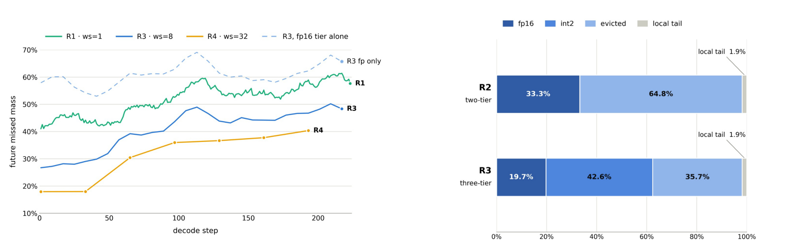
Figure 1 左侧给出未来 missed mass 随解码步数的变化。token 级 R1 的曲线整体高于窗口级 R3/R4，说明把连续窗口作为决策单位确实减少了未来注意力落到已删除状态的比例。虚线把 R3 的 INT2 层临时视为不可访问，曲线反而升到约 60% 一带；它与蓝色实线之间的间隔不是抽象容量收益，而是低比特窗口后续仍被查询使用的直接迹象。右侧把 R2 与 R3 放在相同窗口大小和字节预算下：R2 仅让 33.3% 的 FullKV 参考注意力质量留在全精度，64.8% 落入永久淘汰；R3 虽把全精度份额降到 19.7%，却另有 42.6% 保存在 INT2，永久淘汰份额降到 35.7%。因此，三层设计的实质是用较少全精度容量换取更广的“仍可访问历史”，不是简单把更多 token 标成保留。
这项诊断也提示一个边界：窗口化和低比特层并不会自动知道未来。R4 的大窗口在部分步数上有更低 FMM，但过粗窗口会把真正重要与无关状态绑在一起；R3 的量化访问也有近似误差，低比特注意力质量未必等于 FullKV。QEvict 的问题定义应理解为“降低永久误删风险”，而不是“恢复完整缓存等价性”。后续实验是否成立，要同时看任务质量、低比特排序信号、路由回流和执行成本。
2. 方法
2.1 问题建模：窗口状态与字节预算
在第 $\ell$ 层、第 $t$ 个解码步，查询只对当前可访问的 full 与 quantized KV 做注意力。论文把这一基础计算写成下式；它先界定执行语义，再让后续预算分配有明确后果：留在两个驻留层的状态仍能参与 softmax，进入 Evicted 的状态则完全退出可见集合。
符号解释：$q_t^{\ell,h}$ 是第 $\ell$ 层 query head $h$ 的当前查询，$K_{\mathrm{acc},t}^{\ell}$ 与 $V_{\mathrm{acc},t}^{\ell}$ 是仍可访问的键和值，$d_{kv}$ 是 head 维度，$a_t^{\ell,h}$ 为注意力概率，$o_t^{\ell,h}$ 为该 head 输出。Evicted 窗口不在 accessible 集合内，所以一旦删错就没有后续路径让它重新贡献。
系统先保护开头 sink token 和最近生成区，再把更早的历史划成连续窗口集合 $W_t$。每个窗口状态 $z_t^{\ell}(w)$ 只能取 Full、Quantized 或 Evicted。与按 token 数量给预算不同，QEvict 明确以持久字节计费：
符号解释：$B_{\mathrm{sink}}$、$B_{\mathrm{local}}$ 是保护区成本，$M_f(w)$ 与 $M_q(w)$ 分别是窗口 $w$ 的全精度与量化持久成本，$B_{\mathrm{total}}$ 是总 KV 预算，指示函数决定某项成本是否计入。这里的量化成本不只含 packed code，还包含 scale、offset、原始位置和 ledger 等元数据；否则“2bit”名义宽度会低估实际驻留。
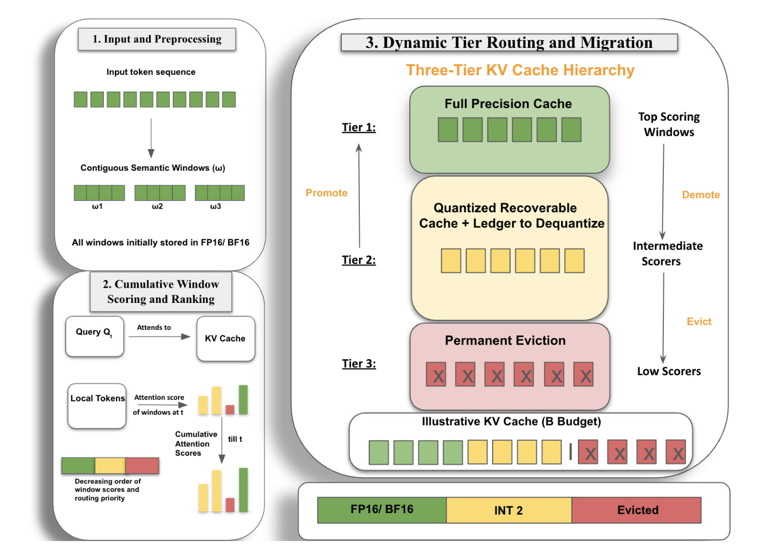
Figure 2 按论文原始三阶段串起整个推理链。左上把输入划成连续窗口，同时 sink 与 recent token 始终留在全精度保护区；左下以查询对窗口的注意力累计值形成排序，不在每一步追逐瞬时高分；右侧按字节预算把高分窗口放入 Full，中间分数窗口写入 INT2 可恢复层，低分窗口才永久删除。黄色层不是离线压缩档案，它仍会被反量化后参加注意力和后续打分；当分数上升时沿左侧箭头回到 Full，当分数下降时可再次降级。右下预算条还明确展示同一持久预算如何混合 FP16/BF16、INT2 与不驻留状态。
核心变化不是把淘汰阈值调得更保守，而是把二元“保留/删除”改成带可访问中间态的状态机。 这使系统能在不把所有历史都留成全精度的前提下，延后真正不可逆的决定。代价也从图中可见：每次访问黄色层都涉及解量化和按位置重建，周期性路由还要取得 attention probability；因此方法质量与 kernel 支持必须分开评估。
2.2 累计窗口评分：从瞬时 token 注意力到稳定排序
QEvict 默认用跨路由间隔累积的注意力质量给窗口排序。它先在各 query head 上汇总窗口内 token 的注意力，再跨生成步累加；因此一个窗口的得分既反映空间聚合，也保留过去查询留下的证据。若路由间隔为 $\Omega$，则：
符号解释：$S_t^{\ell}(w)$ 是窗口 $w$ 到当前路由事件的累计分数，$H_q$ 为 query head 数，$a_{\tau}^{\ell,h}(i)$ 是第 $\tau$ 步对窗口内 token $i$ 的注意力，$\Omega$ 是生成 token 的路由间隔，$R$ 表示实际触发路由的周期条件。默认配置中 $\Omega=8$，即每 8 个生成 token 批量更新一次历史窗口顺序。
prefill 阶段用 prompt attention 初始化窗口分数和首次层级分配；decode 阶段的新 KV 先进入 recent 保护区，老化退出 recent 后再进入候选池。累计方式会保留过去多步证据，减少一次查询的偶然峰值把整个路由集合翻转。它并不要求特定训练目标，也不更新模型权重；因此 QEvict 是训练无关的推理期管理器。附录还把排名函数换成指数衰减注意力、attention $p$-norm 与 key $L_2$ norm，说明三层层级只要求一个高者优先的排序，而非与累计注意力强绑定。
累计也可能变成迟滞：真正刚出现的新需求要先积累足够质量才会把窗口推回 Full。可恢复层为此提供缓冲——窗口在尚未升回全精度时仍可访问，而不是等待期间完全丢失。这个组合体现了两种稳定性：窗口聚合抑制空间碎片，时间累积抑制路由抖动；两者都以牺牲部分反应速度为代价，最终需要由 FMM、Churn 与 LIR 一起检验。
2.3 可恢复三层层级：分配、ledger 与缓存执行
论文把一层缓存写成五元组。这个表达把始终受保护的 sink/recent 与需要竞争历史预算的三个状态显式分开，也避免把 local 滑动造成的确定变化误解成历史路由抖动：
符号解释：$S$ 是 sink 区，$L_t$ 是 recent local 区，两者均保持全精度；$F_t$ 是历史全精度层，$Q_t$ 是可恢复低比特层，$E_t$ 是永久淘汰集合。五元组把“受保护但不参与竞争”的局部状态与“按分数竞争预算”的历史状态分开。
扣除保护区后，历史预算 $B_{\mathrm{hist}}$ 按量化份额 $q$ 分给 Full 与 Quantized 容量。这里必须使用真实单窗口字节成本，而不是简单按 16bit 与 2bit 的名义比值换算，因为量化 scale、offset、位置和 ledger 都会占用持久显存：
符号解释：$K_f$、$K_q$ 是可容纳的全精度与量化窗口数，$q$ 是分给可恢复层的字节比例，$M_f$、$M_q$ 是单窗口真实持久成本。默认 $q=0.70$、INT2；INT2 的 $M_q$ 更小，因此同一字节可让更多历史窗口继续可访问，但每个窗口的数值误差大于 INT4。
候选池由上一次的 Full、Quantized 与刚离开 recent 的窗口合并而成，随后先选 Full 再选 Quantized。这个候选定义允许已量化窗口重新竞争最高层，也让刚老化的局部状态拥有首次进入历史层级的机会；已经永久删除的窗口不会回到候选池：
符号解释：$W_t^{\mathrm{cand}}$ 是本次可重新分配的全部历史候选，$L_t^{\mathrm{aged}}$ 是刚从局部保护区老化出来的窗口。已永久进入 $E$ 的窗口不再出现，这仍是系统不可逆边界。
符号解释：$\operatorname{TopK}_{K}$ 按累计分数选出前 $K$ 个窗口；Full 优先取得前 $K_f$，Quantized 从剩余窗口取得接下来的 $K_q$，其余进入 Evicted。这个顺序确保同一窗口不会同时占用两层预算，也让层级边界随分数变化。
迁移关系可以压缩为下面的非对称状态机。双向边只存在于仍有持久副本的两个驻留层之间；一旦进入不占字节的 Evicted 集合，原始和量化表示都会释放，因此不存在返回路径：
符号解释：Full 与 Quantized 允许双向迁移，箭头双向意味着量化窗口可 promotion；从 Quantized 到 Evicted 是单向永久删除。一个窗口第一次降到 $Q_t$ 时才做非对称低比特量化：key 沿 token 维按 channel 量化并保存 pre-RoPE 表示与绝对位置，value 沿 channel 维按 token 量化。以后从 $Q$ 升到 $F$ 时，从 ledger 反量化出同一个近似；再次降级时复用原 code，而不是对重建值重复量化。write-once ledger 的作用是阻止多次升降级累积量化误差，但 promotion 恢复的是执行层驻留，不会神奇找回量化前的原始 KV。
执行时，Full 与 Quantized 分开持久存储。进入 attention 前，活动低比特窗口被反量化，key 按原绝对位置重新施加 RoPE，再与全精度状态按时间顺序重建有效缓存。标准 decode 可以走 FlashAttention-2；但初始化与路由事件需要用 SDPA 暴露注意力概率以更新分数。训练阶段不存在这些模块，推理阶段却新增 score aggregation、ranking、migration、dequantization 和 reconstruction。方法的算法逻辑很简洁，系统瓶颈集中在这些新操作能否被 fused kernel 吸收。
3. 实验结果
3.1 统一设置与 LongBench
作者在 Llama-3.1-8B-Instruct、Mistral-7B-Instruct-v0.2 和 Qwen2.5-7B-Instruct 上评估。QEvict 默认使用五个 sink token、$\Omega=8$、INT2 可恢复层和 $q=0.70$；LongBench、RULER 与 GSM8K 采用相同核心配置。淘汰 baseline 包括 StreamingLLM、SnapKV、AdaKV、CriticalKV、DefensiveKV 与 Layer-DefensiveKV，并在测得的 5%、10%、20% 等持久 KV 预算下对齐；KIVI、KVQuant、ZipCache 等量化方法则按真实 performance-memory operating point 比较，避免仅按名义 bit width 假装等显存。
显存核算使用：
符号解释：系数 2 分别计 key 和 value，其余符号对应层数、KV head、head 维度、序列长度与单元素字节。QEvict 的持久预算还显式包含 sink、recent、全精度历史、packed quantized code、量化元数据、位置和 ledger；临时 workspace 不算入 KV ratio，但在峰值 GPU 显存中单独出现。这一区分对理解 Table 4 很重要。
LongBench 覆盖单文档问答、多文档问答、摘要和少样本学习四类十二项任务。主文 Table 3 把 Llama 分数写在斜杠前、Mistral 写在斜杠后。
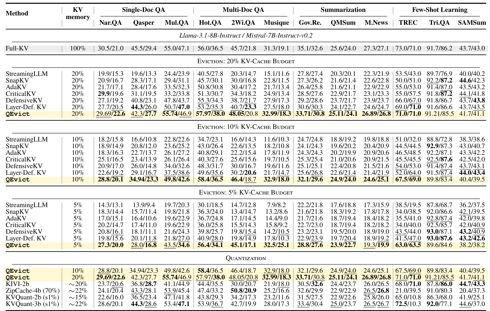
Table 3 的总体结论是 QEvict 在六个“模型×预算”宏平均上均最高，但逐任务并非全面支配。20% 预算时，论文汇总的 Llama/Mistral 宏平均为 46.4/37.8，最强 matched-memory eviction 为 44.0/37.4；预算收紧到 5% 后，优势扩大到 9.7/4.7 分，符合“可恢复覆盖在紧预算更有价值”的主张。逐列看，5% Llama 的 HotpotQA 为 56.4，而 Layer-DefensiveKV 为 40.9；MuSiQue 为 32.5，而后者 17.8，跨文档证据受益明显。但 TriviaQA 和 SAMSum 等列并不总胜出，例如 5% Llama 的 TriviaQA 89.6 低于多种淘汰 baseline 的 93.0。相对量化方法，QEvict 20% 宏平均领先；10% 仍能以约一半 KV 显存接近最强 20% 左右量化 operating point。证据支持更好的总体质量—内存折中，不支持每项任务都最好。
3.2 RULER 32K：跨步证据回流
RULER 在 32K 上把能力拆成频次聚合、needle-in-a-haystack、长距离问答和变量跟踪，共十三项 string-match 指标。所有方法在 Llama-3.1-8B-Instruct 的 20% 预算下比较，FullKV 作为 100% 参考。
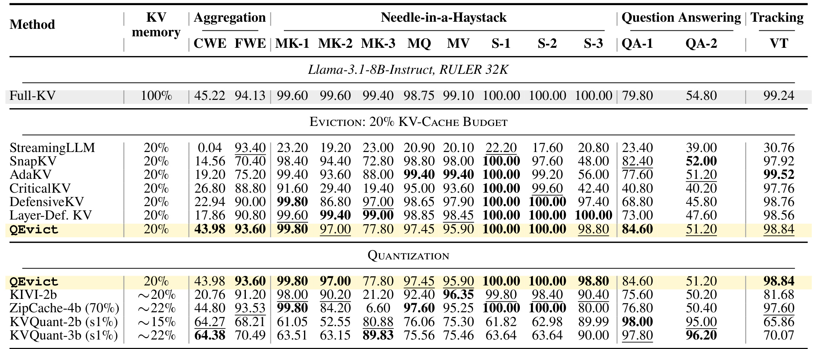
Table 2 中 QEvict 的宏平均为 87.6，比最强 matched-memory 淘汰 Layer-DefensiveKV 高 1.2 分，距离 FullKV 约 2.4 分；相对最强相近显存量化 baseline 高 8.6 分。优势不是来自所有 needle 项都占优：QEvict 的 MK-3 为 77.8，低于 DefensiveKV 的 97.0 和 Layer-DefensiveKV 的 99.0，说明低比特覆盖仍可能保不住某些多 key 组合。它在 CWE 聚合上达到 43.98，接近 FullKV 的 45.22，远高于 Layer-DefensiveKV 的 17.86；QA-1 为 84.60，也超过主要 20% 淘汰线。对比 KVQuant 两个 operating point 可见，量化方法在 QA-1/QA-2 有很高分，却在多项 needle 与 tracking 明显下降。三层路由的收益更像“减少灾难性任务崩塌并保持能力均衡”，而非把每一列推到最高。
3.3 GSM8K：短序列多步生成并非全胜
GSM8K 用 exact-match 检验自回归多步推理。它的序列比长文问答短，因此实验把 25% 持久预算留给 recent token；评估重点是中间生成状态是否在后续计算或最终答案构造时重新有用。
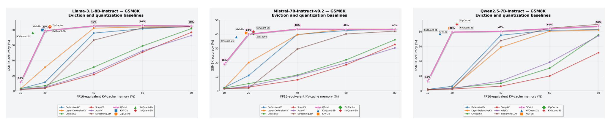
Figure 3 的三面板呈现一致的大轮廓：永久淘汰方法在 10%–20% 预算常接近崩溃，而 QEvict 在 20% 已跃升到 Llama 79.09、Mistral 40.12、Qwen 79.42；对应 Layer-DefensiveKV 只有 31.16、20.09、3.71。说明可恢复历史对多步生成比“只保留当前高分状态”稳得多。但与全局量化比较，QEvict 并不占据所有 Pareto 点：约 20% 时 Llama 的 KIVI/ZipCache 为 79.98/84.46，Qwen 为 84.61/89.99，都高于 QEvict；Mistral 的 KIVI 40.94 也略高于 40.12。到 40% 后 QEvict 在 Llama 达 85.44，已接近 FullKV 86.93，但 Qwen 仍只有 80.51，距 FullKV 90.78 较远。该图支持“可恢复淘汰显著修复硬删除”，却也清楚说明纯量化在某些模型和短推理任务上仍更强。
3.4 三个核心超参数的消融
窗口尺寸 $\Omega$ 同时控制路由间隔与空间粒度。过小更灵活但分数易受短期波动影响，过大更平滑却把不相关 token 绑定成粗块。
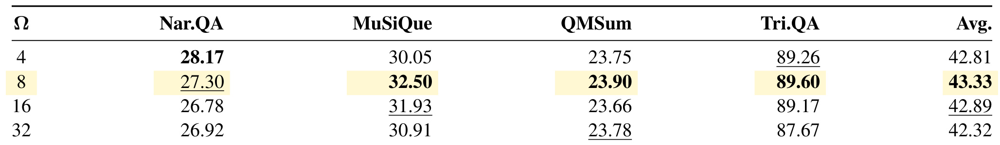
Table 11 在 5% 预算、$q=0.70$、INT2 下比较 $\Omega\in\{4,8,16,32\}$。默认 8 的四任务平均 43.33 最高，16 为 42.89，4 为 42.81，32 降到 42.32。细项揭示折中：$\Omega=4$ 的 NarrativeQA 28.17 反而最好，但 MuSiQue 只有 30.05；$\Omega=8$ 把 MuSiQue 提到 32.50，并在 QMSum 与 TriviaQA 上取得 23.90、89.60。大窗口 32 没有带来更稳定的最终质量，TriviaQA 还降至 87.67。因而窗口化有效不等于窗口越大越好，默认值是跨任务平均折中。
量化层比例 $q$ 决定历史预算中多少留给低比特覆盖、多少留给全精度高分窗口。
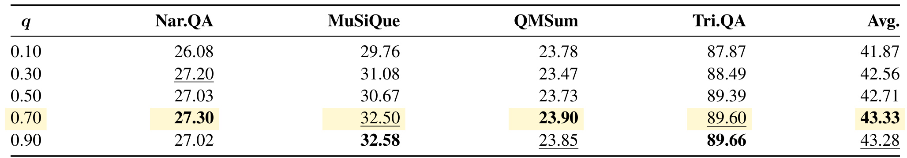
Table 12 从 $q=0.10$ 扫到 0.90，平均分由 41.87 上升，在 0.70 达 43.33，0.90 略降到 43.28。更大的可恢复层确实改善 MuSiQue 和 TriviaQA，0.90 分别为 32.58 与 89.66；但 NarrativeQA 从 0.70 的 27.30 回落到 27.02，说明挤压全精度层也会伤害部分任务。0.70 并非每列最优，却为 full precision 的高置信窗口与 INT2 的广覆盖留出兼顾空间。曲线末端接近平台，也表明仅继续扩大量化层不能无限改善质量。
该扫面只在四个代表任务上进行，平均差 0.05 不能解释为统计显著优势；更稳妥的读法是 q 在 0.70–0.90 附近形成较宽工作区，而部署值还应随真实上下文、请求长度和预算重新标定。
固定字节预算下，INT2 能容纳更多窗口，INT4 则让每个窗口更精确。
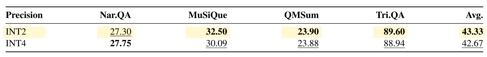
Table 13 显示 INT2 平均 43.33，高于 INT4 的 42.67；优势主要来自 MuSiQue 32.50 对 30.09、TriviaQA 89.60 对 88.94。NarrativeQA 上 INT4 27.75 反而高于 INT2 27.30，QMSum 两者几乎相同。证据更符合“在极紧 5% 预算下，覆盖更多历史窗口通常比降低单窗口量化误差更重要”，而不是 INT2 数值表示本身优于 INT4。换到更宽预算、更长生成或不同模型，这个排序仍需要重新验证。
两行比较没有给出误差条或多随机种子，且只使用 Llama 的四个代表任务；0.66 的平均差不能外推为普遍量化精度结论。更完整的判断还要纳入量化与反量化耗时，因为质量略高并不自动代表服务成本更低。
3.5 机制诊断：漏失、排序一致性与真实回流
论文以 FullKV attention trace 定义未来遗漏质量。对路由事件 $r$、未来跨度 $H=32$，FMM 为：
符号解释：$E_r^{\ell,h}$ 是在事件 $r$ 后不可访问的历史位置，$A_{\tau}^{\ell,h}(i)$ 是 FullKV 参考在未来步 $\tau$ 分给位置 $i$ 的注意力，$T$ 是生成终点。它只统计事件 $r$ 时已经存在的状态，避免把未来新增 token 错算成遗漏。Selection Churn 则为相邻历史集合的 Jaccard 距离：
符号解释：$R_r^{\ell,h}$ 是路由后的历史保留位置；recent 区的确定性滑动被排除。较低 churn 表示压缩策略没有在相邻事件间频繁翻转历史集合。
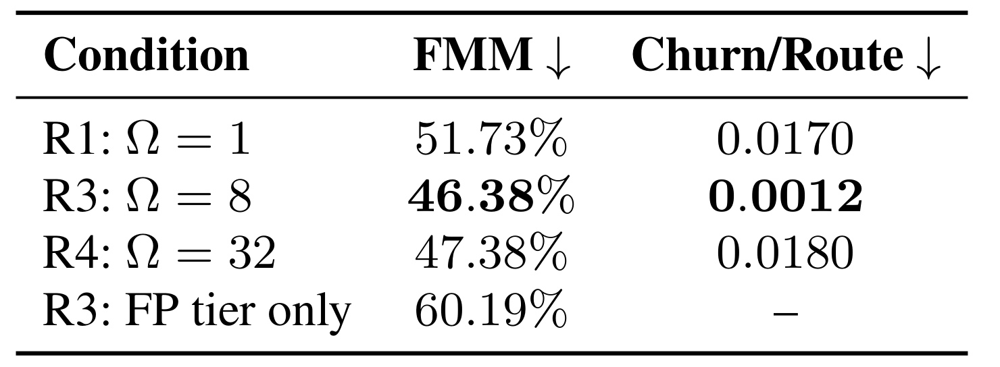
Table 14 将 Figure 1 的趋势压成平均数：token 级 R1 的 FMM 为 51.73%、churn 为 0.0170；窗口级 R3 把两者降到 46.38% 与 0.0012，路由集合抖动下降一个数量级。窗口更大的 R4 FMM 为 47.38%，churn 却回到 0.0180，进一步否定“更大窗口必然更稳”。最有解释力的是 R3 FP-tier-only：保持原预算分配但令 quantized 窗口不可访问，FMM 升至 60.19%。这不是 iso-memory baseline，因为字节没有重新分给 Full，却能隔离黄色中间层究竟保住了多少未来需要的注意力。
低比特窗口不仅要被保存，还必须在量化执行下维持足够可靠的排序。论文用 QSA 比较 quantized 分数向量与对应 FullKV 向量的余弦一致性。
符号解释：$s_r^Q$ 是当前量化层窗口在 INT2 执行下的分数，$s_r^{\mathrm{Full}}$ 是同一成员集合的 FullKV 参考分数。QSA 接近 1 表示相对排序方向一致，不代表注意力幅值相同。
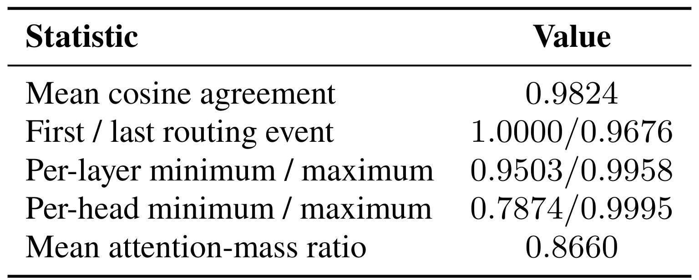
Table 15 报告平均 cosine agreement 0.9824，首末路由事件从 1.0000 降到 0.9676，层级最小/最大为 0.9503/0.9958。总体排序信号足以支撑继续打分与 promotion，但 per-head 最小只有 0.7874，说明局部 head 上量化偏差可能很明显。mean attention-mass ratio 仅 0.8660，又表明量化执行把这些窗口获得的总注意力幅值压低约 13.4%。所以 QEvict 的恢复机制依赖的是“近似排序仍可用”，不能宣称 INT2 与 FullKV 注意力等价。
Global LIR 把“持续不活跃后又回来”定义在 maximal inactive episode 上：
符号解释：$m$ 是进入统计前必须连续不活跃的路由事件数，默认 $m=3$；episode 到生成结束仍未返回时留在分母并计为未救回。该定义避免同一长段不活跃被重复计数。
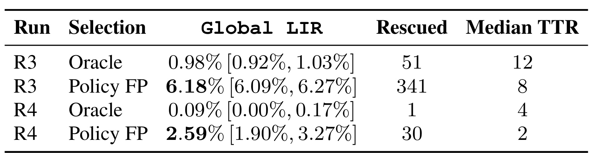
Table 16 中，R3 oracle top-$K_f$ 的 LIR 仅 0.98%，说明真正的最高分区域大体持久；部署 policy FP 却有 6.18% 回流，救回 341 个 episode，约为 oracle 的 6.3 倍。R3 的 median TTR 为 8 个路由事件，乘以 $\Omega=8$ 约是 64 个解码步；R4 为 2 个事件、每次 32 token，同样约 64 步。回流并非只发生在下一次路由，低比特中间层需要把窗口保存相当长时间。另一方面，policy 的高 LIR 也反映近似评分和预算约束制造了额外 re-entry 压力，并不全是语义本身漂移。
最后，作者用关闭 Quantized-to-Full promotion 的变体检查双向箭头是否真正贡献。
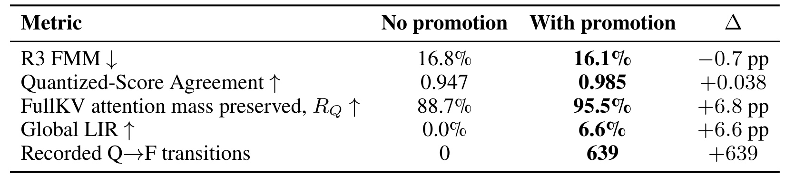
Table 18 中，开启 promotion 后 FMM 从 16.8% 降到 16.1%，QSA 从 0.947 升到 0.985，量化层的 FullKV attention-mass ratio 从 88.7% 升到 95.5%，并记录 639 次 $Q\rightarrow F$ 转移。Global LIR 从 0 变成 6.6%，但无 promotion 时为 0 是机制定义所致，不是独立发现。更重要的限制写在附录正文：两组 pilot 使用了不同源文章，因此结果只能作为“允许回流时指标方向一致改善”的证据，不能当作严格配对因果估计。promotion 还会改变当前留在 $Q$ 层的成员构成，QSA/RQ 上升不表示某个固定窗口的量化误差被逆转。
639 次转移证明功能被频繁使用，却没有给出每次转移的独立净收益；未来需要同一输入、同一生成轨迹和逐窗口配对，才能估计 promotion 的严格因果效果。
3.6 Eager/SDPA 与 FlashAttention-2 的效率口径
效率实验固定 Llama-3.1-8B-Instruct、256-token prefill、1024 个生成 token、batch size 32，并在相同 backend 内比较。TTFT 衡量首 token 延迟，TPOT 衡量后续单 token 时间，throughput 是批量总生成 token 率，Peak GPU 同时包含模型、持久 KV、attention workspace 与临时路由 buffer。
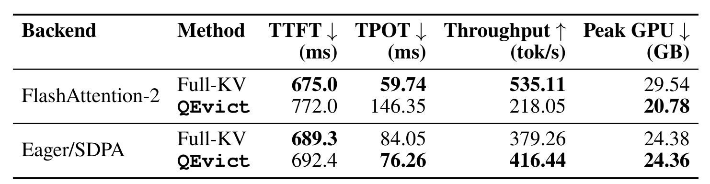
Table 4 给出两幅截然不同的系统画像。Eager/SDPA 下，QEvict 的 TTFT 从 689.3 增至 692.4 ms，约 0.5% 开销；TPOT 从 84.05 降到 76.26 ms，改善 9.3%；吞吐从 379.26 升到 416.44 tok/s，改善 9.8%。这里减少全精度 attended cache 的计算收益足以覆盖低比特管理。FlashAttention-2 下，峰值 GPU 从 29.54 降到 20.78 GB，减少 29.7%，但 TTFT 增到 772.0 ms，TPOT 从 59.74 恶化到 146.35 ms，吞吐从 535.11 降到 218.05 tok/s。原因是当前路径必须周期性 materialize attention score，并执行解量化、位置旋转与缓存重建，破坏 fused kernel 的优势。因此，QEvict 已证明 FlashAttention-2 下的显存节省，却没有证明该路径更快；要同时获得两者，仍需 fused low-bit attention 与 routing kernel。
实验硬件主要是 8 张 NVIDIA A100 80GB，部分运行使用 1 张 NVIDIA GB10 128GB；软件为 PyTorch 2.6.0、CUDA 12.4、Transformers 4.47.1 与 flash-attn 2.8.3。论文没有给出多租户服务、不同 batch 动态、超出 32K 的持续生成或多卡张量并行下的调度结果，所以当前效率数字更适合看成单节点实现的 backend 诊断，而不是直接可迁移的线上 SLA。
4. 总结
4.1 我的判断
QEvict 最有价值的地方，是把“压缩比例”进一步拆成驻留、精度和可恢复性三个维度。Figure 1、Tables 14–16 与 promotion 消融形成了较完整的机制链：历史重要性总体持久却会回流；窗口累计能降低抖动；INT2 大体保留排序信号；可恢复层确实承接未来注意力并发生实际 promotion。LongBench 与 RULER 说明这种机制在紧预算、跨步检索和多文档任务上尤其有用，GSM8K 又提醒它不能全面替代静态全局量化。
工程上应把 QEvict 理解为缓存层级设计，而不是单一压缩算子。它适合那些显存是首要瓶颈、任务需要跨长距离恢复证据、且系统能承受或优化动态路由的场景。若服务栈已经高度依赖 FlashAttention-2，当前实现的吞吐退化足以抵消许多并发收益；在 fused kernel 落地前，显存节省和请求吞吐要分别压测。
4.2 局限与风险
- 动态路由仍需周期性取得 attention probability，当前 FlashAttention-2 路径因 score materialization、解量化和缓存重建产生显著延迟，尚未实现质量、显存与速度三者同时占优。
- 累计 attention 只是未来重要性的代理。进入 Evicted 后仍不可恢复，低分但后来关键的窗口依旧可能被永久删除；recoverable tier 只是推迟边界。
- 实验集中在 7B–8B decoder-only 指令模型、最高 32K RULER 与单节点硬件。更大模型、更长持续生成、多卡并行和在线混合 workload 的外推尚未验证。
- INT2 平均排序一致性高，但 per-head 最低 QSA 只有 0.7874，attention-mass ratio 也只有 0.8660。反复访问对某些 head、语言或生成稳定性的影响可能被宏平均掩盖。
- 窗口边界固定，可能跨越句段或把无关状态绑定；$\Omega=8$、$q=0.70$、INT2 的默认值来自有限代表任务，不应直接视为所有模型和预算的普适最优。
- promotion pilot 使用不同源文章，两组不是严格配对对照。FMM、QSA 和 RQ 的方向改善值得关注，但不能据此量化双向迁移的精确因果收益。
4.3 后续跟进
第一，优先复现 Table 4 的两种 backend，并把持久 KV、临时 workspace、batch capacity 与端到端吞吐分别记录；只有这样才能判断显存释放能否转化为真实并发。第二，开发或等待 fused INT2 attention、dequantization、RoPE 和 routing kernel 后重测，因为这直接决定 QEvict 是否能进入 FlashAttention-2 主流服务路径。第三，在更长生成轨迹与 RAG/Agent workload 上跟踪 FMM、per-head QSA 和回流时间，观察低注意力证据是否在几十到几百步后重新关键。第四，对自适应语义窗口、非 attention 排名器和按层/按 head 的 $q$ 做受控实验；若能在不增加 score materialization 的前提下降低误删，三层层级的价值会更稳固。